Sentinel
SentinelUm cliente vê uma cobrança que não reconhece. Quem responde?
Duas coisas podem dar errado
Um chatbot pode inventar. Ele pode afirmar um fato que não verificou. Pode dizer que um caso existe quando não existe.
Um atendente pode recomeçar do zero. Uma transferência sem fatos verificados obriga o cliente a repetir tudo.
Usuários: clientes de bancos no México, na Colômbia e na Argentina, em espanhol e português.
O que os dados dizem
chamadas por disputas na janela de desenvolvimento, de 464.791.
horas de atendente por mês em disputas
das chamadas por disputas terminam resolvidas
evidence/problem/dev-v1/summary.json · demand, hours, reasons. O conjunto de dados é sintético.
SentinelO Sentinel transforma isso em um caso verificado, ou em um atendente bem informado.
- Espanhol (es-MX, es-CO, es-AR) e português (pt-BR).
- Abre uma disputa só quando a política permite e o cliente confirma.
- Diz que um caso existe só depois de reler o caso.
Quatro casos de demonstração
Uma cobrança, uma confirmação, um número de caso.
Compras iguais. O sistema pergunta qual.
O sistema transfere com os fatos verificados.
O sistema não julga fraude. Um atendente julga.
Repositório: github.com/rdorta27/factored-hackathon-2026-sentinel-engine · Site: rdorta27.github.io/factored-hackathon-2026-sentinel-engine · Demo ao vivo: o link e as credenciais de teste estão no e-mail da entrega. Os dados da demo são sintéticos.
SentinelA IA conversa. As regras decidem.

SentinelNós não dizemos. Nós medimos.
ataques com resultado inseguro, de 42 testados.
de 42 bloqueados pelo código de produção
de 42 seguros só com o modelo mock. Nós dizemos isso.
de acurácia de intenção do roteador LLM em 280 turnos reservados. A linha de base de palavras-chave obtém 53,9%.
A política permite resolver 16 de 56 casos. Os demais precisam de uma transferência ou de uma pergunta. 0/56 terminam de forma insegura. O roteador soma 0 casos resolvidos sobre a linha de base: a linha de base chega ao mesmo teto.
Fontes: evidence/adversarial, evaluation-runs/2024Q4-eval-v7, evaluation-runs/2024Q4-resolution-v2 e -gap-v1. Uma simulação não é uma medição de produção.
SentinelSua marca. Nossa camada de confiança.
Maquete de duas marcas na mesma tela. Mesmo código, mesma política.
- O nome do banco e a cor de destaque vêm de duas variáveis de ambiente, não do código. Uma cor que não passa na verificação de contraste volta ao padrão.
- A camada de confiança não muda: a mesma política, as mesmas verificações, a mesma releitura.
- O atendente recebe um pacote: o pedido, os fatos verificados, as ações que o sistema tentou e o rastro de cada passo.
- O modelo nunca vê o id do cliente.
SentinelO que não construímos, e por quê.
Limites
- Dados: sintéticos, só em espanhol, três países. Os casos em português foram escritos por um modelo.
- Teto: a política permite resolver 16 de 56 casos simulados (Simulação). O sistema resolve todos eles. Não resolve nenhum além deles.
- Mocks: armazém Gold, login e sessão, atendente, armazém de casos e valores da política. Cada um tem um substituto em produção.
- Números: nenhum destes números é uma medição de produção.
Roteiro
- Customer 360: o saldo não tem uma data de referência utilizável.
- Investigação de uma cobrança: precisa de dados reais do banco.
- Conjunto de feedback: resultados das transferências para atendentes.
- Assistente de gastos: precisa de saldos e histórico.
- Consulta de políticas: precisa dos documentos de política do banco.
- Roteamento de transferências: por idioma e especialidade.
README.md#roadmap · docs/architecture/mocks.md